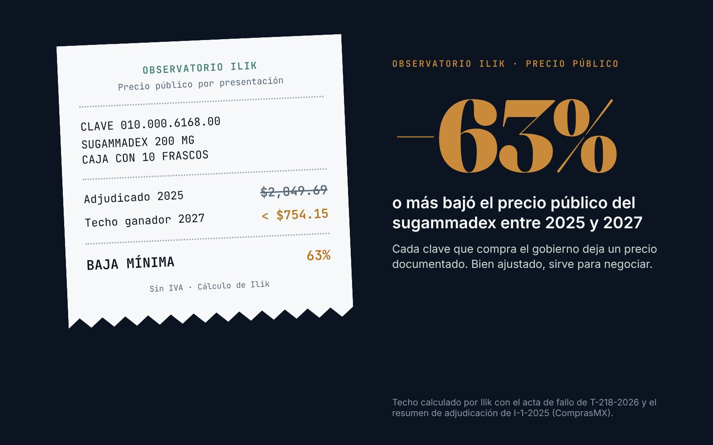
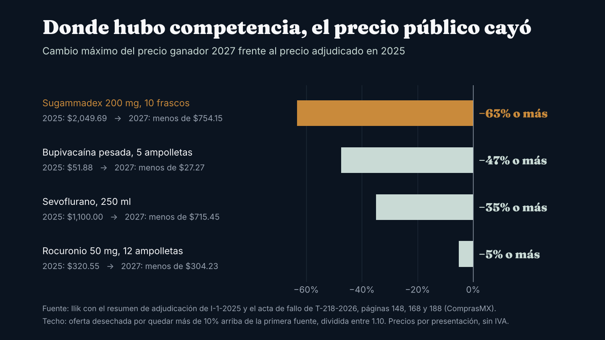
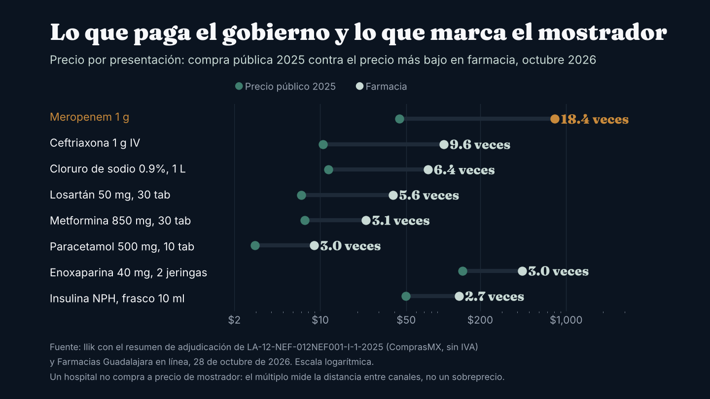
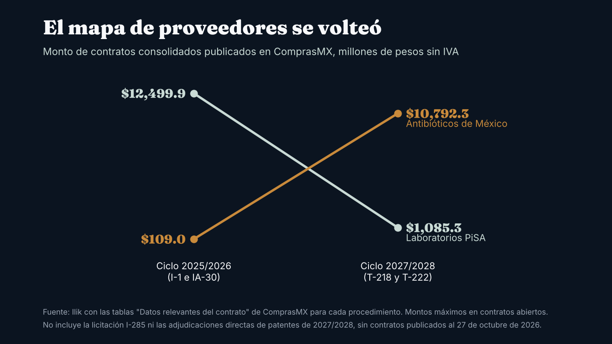

Observatorio / Compras públicas de medicamentos
InvestigaciónLo que paga el gobierno por cada medicamento, y cómo usarlo para negociar
Birmex publica el precio adjudicado de cada clave. Ajustado por volumen, condiciones y presentación, es un punto de partida documentado para la negociación de un hospital privado. La compra 2027/2028 bajó muchos de esos precios y reordenó a los proveedores.

Cuando el gobierno federal compra medicamentos en una licitación consolidada, deja un registro público que casi ninguna empresa privada tiene de sus propios proveedores: el precio unitario adjudicado de cada clave, el proveedor, la marca, el país de origen y la parte de la demanda que le toca. Birmex lo publica en ComprasMX como anexo del fallo.1
Para el área de compras de un hospital privado, ese dato es una referencia de negociación documentada y gratuita. No es el precio que el hospital debe pagar; es el punto desde el cual explicar la diferencia.
Quién paga la mayor parte de la cuenta
INEFAM estima el mercado farmacéutico mexicano de 2025 en 691 mil millones de pesos y 5,180 millones de piezas. El sector público compró 27.2% de las piezas y pagó 17.9% del valor.4 El precio promedio por pieza fue de $87.90 en el sector público y de $227.89 en el segmento privado que mide INEFAM. Ese promedio mezcla precio con tipo de producto, porque el gobierno compra más genéricos y presentaciones grandes, así que no dice que el canal privado pague 2.6 veces más por lo mismo. Sí dice dónde está el dinero.
Un fabricante que gana una clave en la compra consolidada tiene dos clientes: el gobierno, que compra mucho volumen a precio fijo durante dos años, y el canal privado, que compra menos volumen a un precio promedio más alto. Es razonable suponer que buena parte del margen del fabricante se juega en el segundo.
Cómo leer un precio público
Antes de usarlo como referencia hay que ajustarlo por cuatro diferencias:
- Volumen. El gobierno compra para dos años y para todo el país. La licitación de genéricos T-218 convocó un mínimo de 1,415 millones de piezas; lo adjudicado, sin las claves desiertas, suma un mínimo de 1,276 millones.2
- Condiciones. El proveedor público entrega en más de 400 puntos, con etiquetado exclusivo para gobierno y un inventario adicional de 5% de la demanda anual.78
- Pago. La ley fija un plazo de 17 días hábiles14, pero el gobierno ha reconocido adeudos de 14 mil millones de pesos con farmacéuticas y la industria los estima en 15 mil millones.713 Es razonable suponer que ese riesgo de cobro se refleja en el precio que ofrece el proveedor.
- Presentación. Los medicamentos tienen IVA de 0%, así que el impuesto casi no cambia la comparación. La presentación sí: hay que comparar exactamente la misma concentración y el mismo número de piezas.
Con esos ajustes, la pregunta ya no es cuánto cuesta, sino cuánto más paga el hospital y por qué. Esa conversación sí se puede tener con un proveedor.
Qué cambió entre 2025 y 2027
El acta de fallo de la T-218 no publica en un solo cuadro el precio ganador de cada clave. Sí registra, para cada oferta desechada, el precio aceptable de la clave y el precio que dejó ese licitante después de la subasta. Cuando la oferta se desechó por quedar más de 10% arriba de la primera fuente, ese dato pone un techo al precio ganador: dividido entre 1.10, el ganador quedó en ese nivel o más abajo.2

Hay caídas fuertes: el techo del sugammadex queda al menos 63% abajo del precio de 2025. Los datos del acta no permiten atribuir la caída a una causa.
En el otro sentido, los topes subieron. En las 96 claves de nuestra muestra con precio comparable, el precio aceptable de 2027 quedó en la mediana 36% arriba de lo pagado en 2025. Pero el resultado de la subasta fue otro: en 41 de las 76 claves con techo calculable, el ganador tuvo que quedar por debajo del precio de 2025. En las otras 35 no lo sabemos. La muestra no es aleatoria: solo incluye claves con ofertas desechadas por la regla de 10%.
El precio público frente al mostrador
Para dimensionar la distancia entre canales, comparamos el precio público adjudicado en 2025 con el precio más bajo publicado en la tienda en línea de Farmacias Guadalajara el 28 de octubre de 2026, en la misma presentación.19 Es una sola cadena; otros canales pueden tener precios distintos. La comparación no mide un sobreprecio ni lo que paga un hospital. Mide la distancia entre el extremo más caro de la cadena privada, el mostrador, y el precio público. El precio de un hospital está en algún punto intermedio, y ese intervalo es el que vale la pena conocer clave por clave.

En siete de los ocho productos, el mostrador marca entre 2.7 y 9.6 veces el precio público. El meropenem es un caso aparte: permite comparar la misma marca en los dos canales. Según el fallo original de 2025, la clave se adjudicó 60% a Laboratorios PiSA con su marca Pisapem, a $43.97 por frasco, y 40% a Aurovida, a $42.00.1 Pisapem era el único meropenem de 1 g listado en la farmacia, a $808.09.9 Entre esos dos números está el margen del distribuidor y de la farmacia, el costo de vender en mostrador un antibiótico de uso hospitalario con poca rotación y las condiciones distintas de cada canal: el producto público lleva etiquetado de gobierno y se entrega en más de 400 puntos. No sabemos cuánto paga hoy un hospital por ese producto.
Concentración: el mercado parece abierto hasta que se mira clave por clave
En la compra de genéricos 2027/2028, el índice Herfindahl Hirschman calculado con los montos de los 1,176 contratos es de 386 puntos, un nivel bajo que corresponde a un mercado repartido entre muchos proveedores. El más grande, Antibióticos de México, tiene 13% del monto máximo, y los cinco primeros suman 32.5%.3
Esa foto agregada engaña. En 2025, 81% de las claves de medicamento adjudicadas (542 de 671) quedaron con un solo proveedor; con material de curación incluido, 85%.1 Antes de la subasta de la T-218, 228 claves tenían un solo oferente.5 Para el gobierno, una clave con un solo proveedor es un riesgo de abasto. Para el hospital privado es una clave donde ese proveedor puede marcar la referencia de precio en ambos canales, sobre todo si pocos competidores tienen registro sanitario.
Ocurre lo mismo al analizar el gasto de un hospital: sumar a nivel proveedor da una imagen de competencia que desaparece al bajar al nivel de producto.
Un índice de concentración bajo no garantiza competencia en cada clave.
Quién ganó y quién dejó de ganar
La Secretaría de Salud reportó, según N+, que los contratos con proveedores mexicanos en medicamentos pasaron de 27 mil a 62 mil millones de pesos entre ciclos.6 Los contratos publicados en ComprasMX muestran que el reparto cambió mucho entre empresas.

Antibióticos de México pasó de 109 millones a 10,792 millones, partiendo de una participación muy pequeña en 2025. Laboratorios PiSA, el mayor proveedor por monto de contratos de la I-1 de 2025, tiene 1.1% del monto de la T-218 (937.8 millones) y suma 1,085.3 millones con la T-222.3 La cifra de 2027/2028 puede cambiar cuando se publiquen los contratos de la I-285 y de patentes. De las 127 claves que PiSA tuvo en el fallo original de 2025 y que volvieron a licitarse en la T-218, 111 se adjudicaron, a PiSA o a otros proveedores, y 16 quedaron desiertas.12 Los datos públicos no dicen por qué cambió su participación.
Esta pieza se actualizará si Laboratorios PiSA o Antibióticos de México comentan los datos aquí presentados.
Qué significa para el hospital privado: cuatro escenarios
Escenario A. Capacidad que busca cliente. Si un fabricante pierde volumen público, su capacidad instalada no desaparece y puede buscar cliente en el canal privado. Aplica a cualquier proveedor que haya perdido claves en la T-218, en cualquier categoría. Señal: propuestas comerciales con descuentos por volumen anual en el primer trimestre de 2027. Qué hacer: llegar a esa negociación con el precio público de cada clave y el volumen propio de doce meses.
Escenario B. Margen que se busca en el canal privado. Con precios públicos fijos en pesos, pagos lentos y costos nuevos (etiquetado, inventario adicional, entregas en más de 400 puntos), los fabricantes ganadores tienen incentivo para buscar margen en el precio privado. Es una hipótesis, no un hecho observado en México. La referencia internacional disponible es parcial: en China, algunos medicamentos alternativos, que no entraron a la compra por volumen, subieron de precio en el segundo año en cuatro categorías terapéuticas, en instituciones públicas.10 No hay evidencia publicada sobre lo que hicieron los ganadores en el canal privado. Señal: aumentos de lista por arriba de la inflación general en genéricos hospitalarios. Qué hacer: separar en el análisis de compras las claves con un solo proveedor público.
Escenario C. Clave desierta, mercado tenso. Si una clave quedó desierta, lo usual es que el gobierno la compre por adjudicación directa o en otra licitación. Es el caso de tres claves de diálisis peritoneal en bolsa de 2 litros y de varios electrolitos.2 Una compra urgente del gobierno compite por la misma oferta que el canal privado. Los datos públicos no dicen nada sobre los planes de producción de los proveedores. Señal: adjudicaciones directas de esas claves en ComprasMX en enero y febrero de 2027. Qué hacer: cobertura de inventario para el primer trimestre en las claves críticas.
Escenario D. El paciente crónico cambia de canal. Las Farmacias del Bienestar operan 6,567 puntos en 24 estados desde septiembre de 2026; en su piloto surtían 22 medicamentos para diabetes, hipertensión y dislipidemia provistos por Birmex.1112 Pueden restar compra de bolsillo en farmacias privadas. No toca directamente al hospital, pero cambia la mezcla de ventas de los laboratorios que también le venden.
Cómo usar el precio público en una negociación
- Liste las 50 claves de mayor gasto del hospital y busque su equivalente exacto en el Compendio Nacional de Insumos.
- Registre para cada una el precio público de 2025/2026 y, cuando exista, el de 2027/2028.
- Ajuste por volumen, condiciones y presentación, y documente el ajuste.
- Ordene por brecha en pesos, no en porcentaje: la conversación empieza donde la brecha absoluta es mayor.
- Marque las claves con un solo proveedor público o desiertas: ahí no se negocia solo precio, se negocia abasto.
Nota metodológica
Datos de ComprasMX al 27 de octubre de 2026; precios de farmacia al 28 de octubre de 2026. Precios y proveedores de 2025: resumen de adjudicación de LA-12-NEF-012NEF001-I-1-2025 publicado por Birmex; corresponden al fallo original, que se declaró nulo en abril de 2025, y parte de las claves se reasignó o volvió a subasta, por lo que algunos precios finales pagados pueden diferir. Precios de 2027: acta de fallo de LA-12-NEF-012NEF001-T-218-2026, escaneada, leída con reconocimiento óptico de texto y revisada contra la imagen en cada cifra citada; los techos son cálculos de Ilik y la muestra excluye una lectura dudosa. Contratos y montos: tablas "Datos relevantes del contrato" de ComprasMX; son máximos de contratos abiertos, sin IVA. Para PiSA se consideró la razón social Laboratorios PiSA, S.A. de C.V. Mercado total: INEFAM. Todas las cifras pasaron por una verificación independiente y el texto por una revisión editorial independiente antes de publicarse.
Transparencia. Ricardo Rodríguez, fundador de Ilik, trabajó en Laboratorios PiSA hasta julio de 2026. Este análisis usa solo información pública (ComprasMX, INEFAM y precios en línea de farmacia) y ninguna información interna de PiSA ni de otro laboratorio. Los párrafos sobre PiSA fueron revisados por un editor sin vínculo con la empresa. Ilik ofrece servicios de inteligencia de compras a hospitales privados. Correcciones y comentarios: contacto@ilikanalytics.com.
Fuentes
- Birmex. Resumen de adjudicación de LA-12-NEF-012NEF001-I-1-2025, publicado en ComprasMX. Ver en comprasmx.buengobierno.gob.mx ↩
- Birmex. Acta de fallo y tabla de partidas de LA-12-NEF-012NEF001-T-218-2026, 25 de septiembre de 2026, publicadas en ComprasMX. Ver en comprasmx.buengobierno.gob.mx ↩
- ComprasMX. Tablas de contratos de I-1-2025, IA-30-2025, T-218-2026 y T-222-2026, consultadas el 27 de octubre de 2026. Ver en comprasmx.buengobierno.gob.mx ↩
- Enrique Martínez Moreno (INEFAM). "Análisis integrado del mercado farmacéutico en México 2024-2025", Mundofarma, 31 de marzo de 2026. Ver en mundofarma.com.mx ↩
- El CEO. "Compra de medicamentos de Birmex pone bajo la lupa precios y abastecimiento para 2027-2028". Ver en elceo.com ↩
- N+. "Salud concluye compra consolidada de medicamentos para 2027-2028 por 84 mil mdp". Ver en nmas.com.mx ↩
- El Financiero. "Compra de medicinas enfrenta costos de 10 mil mdp adicionales; persiste riesgo de desabasto", 28 de julio de 2026. Ver en elfinanciero.com.mx ↩
- El Imparcial. Requisito de inventario de 5% para la compra 2027/2028, 22 de julio de 2026. Ver en elimparcial.com ↩
- Farmacias Guadalajara, tienda en línea, fichas de producto consultadas el 28 de octubre de 2026 (paracetamol, metformina, losartán, enoxaparina, insulina NPH, ceftriaxona, cloruro de sodio y Pisapem 1 g). Ver en farmaciasguadalajara.com ↩
- Estudio sobre la compra por volumen en China en 11 ciudades piloto, publicado en DOAJ. Ver en doaj.org ↩
- Expansión Política. "Farmacias del Bienestar en 24 estados", 25 de agosto de 2026. Ver en politica.expansion.mx ↩
- Expansión Política. "Farmacias del Bienestar: cómo funcionará", 3 de diciembre de 2025. Ver en politica.expansion.mx ↩
- La Razón. "Sheinbaum admite deuda de 14 mil millones de pesos a farmacéuticas", 26 de septiembre de 2025. Ver en razon.com.mx ↩
- MGK. Actualización sobre la nueva Ley de Adquisiciones (plazo de pago de 17 días hábiles), abril de 2025. Ver en mgk.mx ↩

Fundador de Ilik. Estadístico de formación, con más de ocho años al frente de la inteligencia comercial del canal hospitalario privado en la industria farmacéutica.